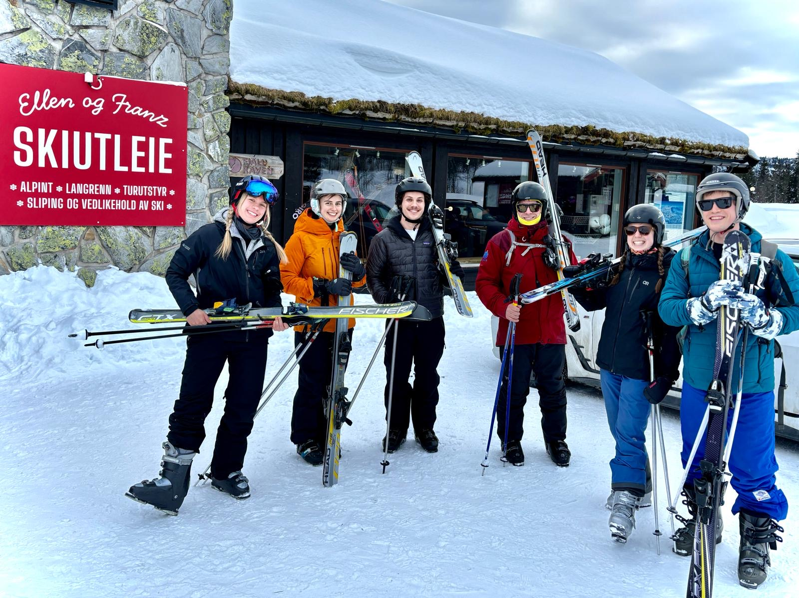
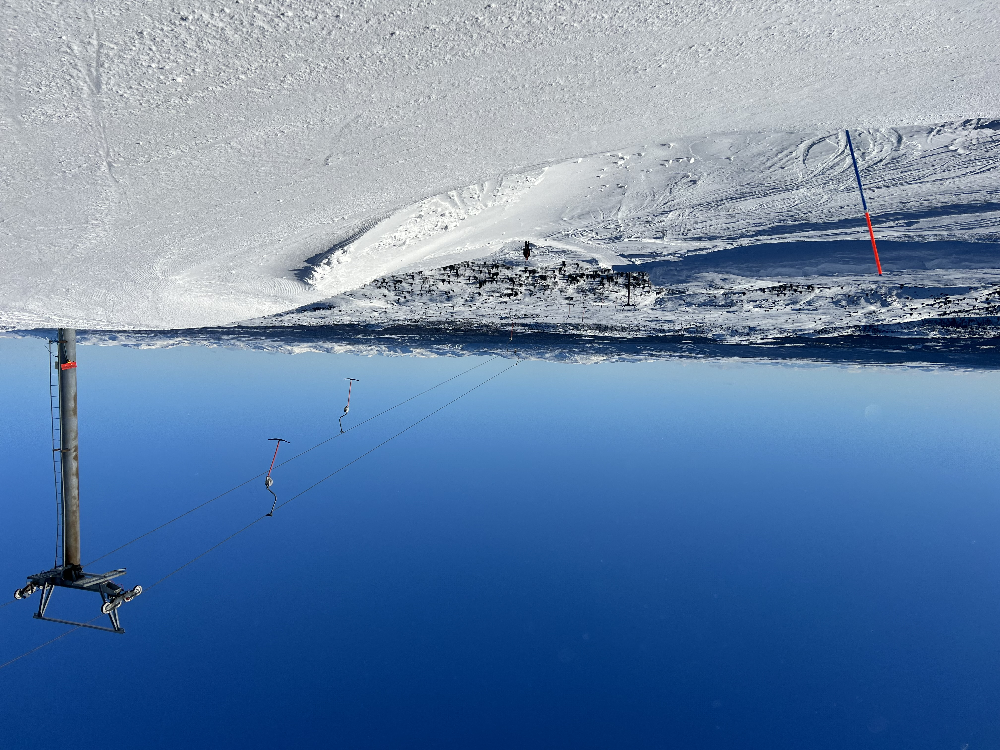
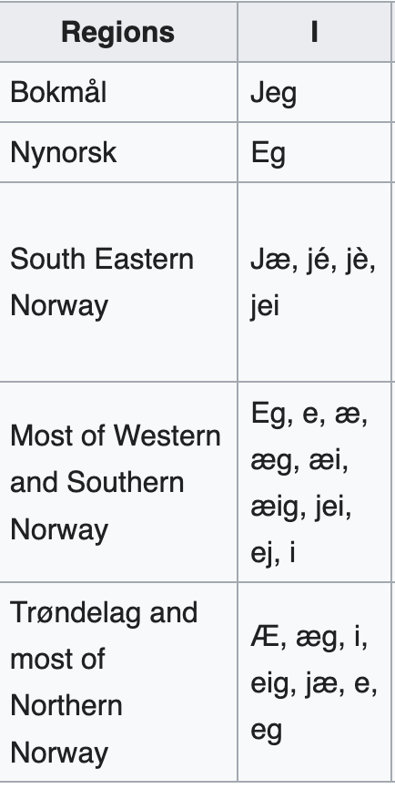
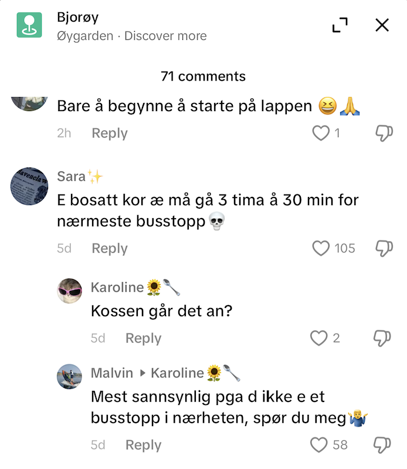
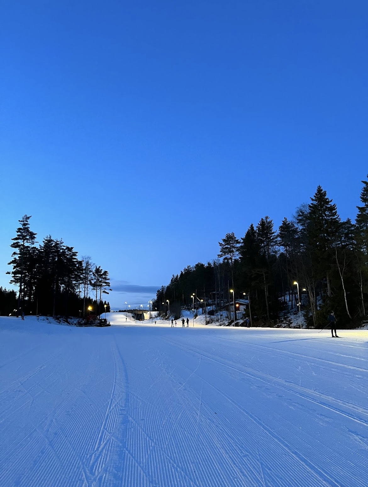
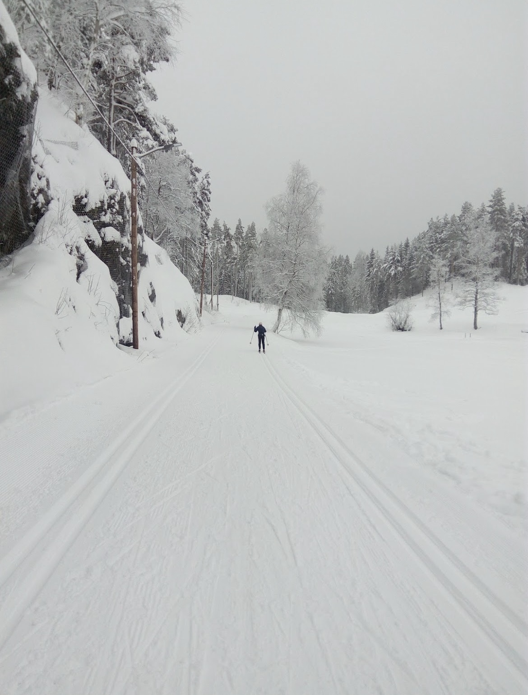
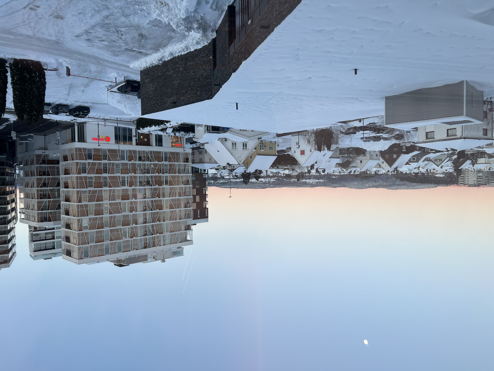
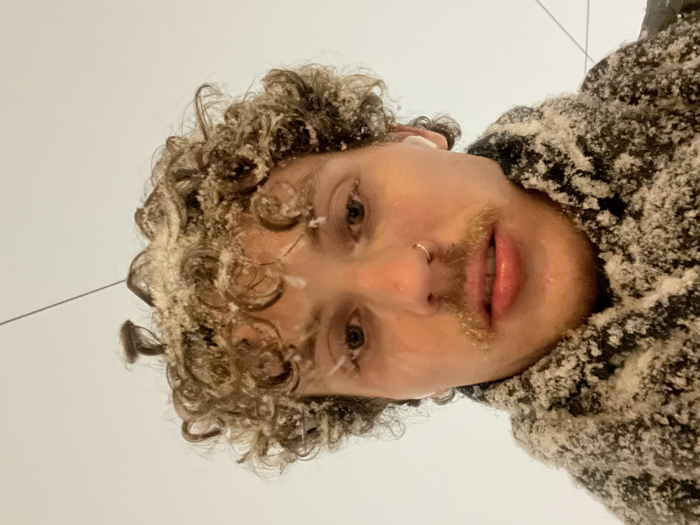
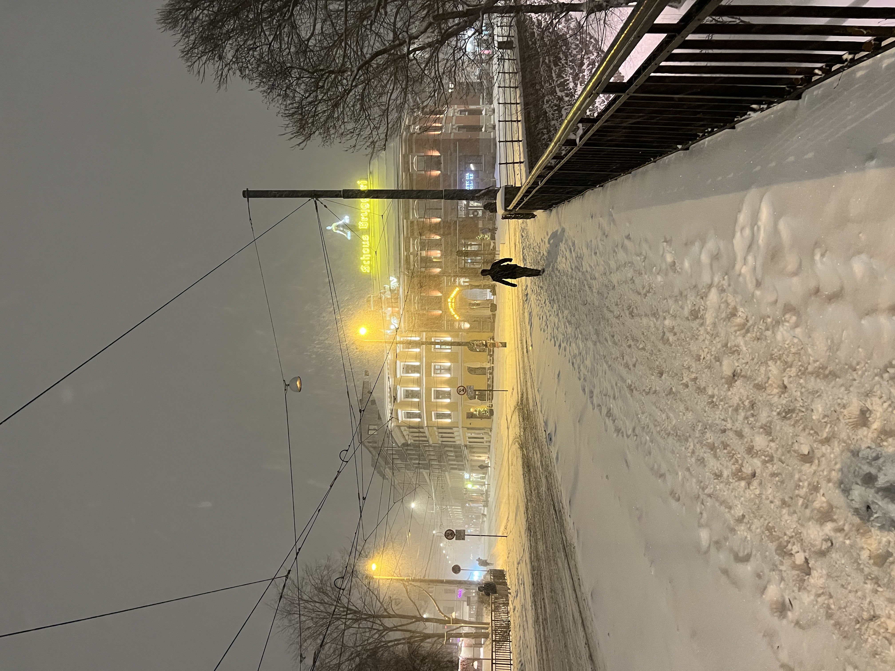
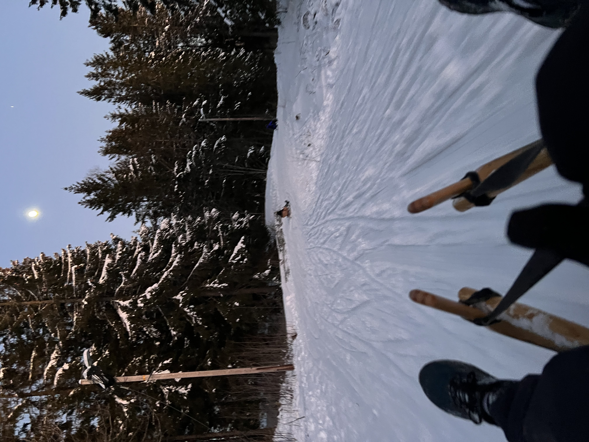

Hei og velkommen! I've always wanted a terrible html website (à la Space Jam and the Heaven's Gate cult - two things commonly referred
to in the same sentence) and so here's my attempt to document my year abroad in Norway. Enjoy :D
A second consecutive skiing post, with this one being a little more successful than the last! This past weekend I was up in Skeikampen, a ski resort a little
outside the town of Lillehammer, a two and a half hour drive north of Oslo. Lillehammer is best known for being the site of the 1994 Winter Olympics, which
actually are the most watched Olympic games of all time (one of my favorite fun facts, it’s because of the drama between Nancy Kerrigan, Tonya Harding, and
the hitman hired by Tonya Harding’s husband - wikipedia link here for those unaware of the story). Future aspiring curling career aside, I wasn’t up there
for any Olympic related reasons, but actually because the weekend was a ski retreat for the Fulbright program, meaning it was a chance to finally catch up
with the other Americans in Norway for the year, many of whom I hadn’t seen since our orientation in August. This time around, I opted for the familiar
terrain of downhill skiing and having two feet fully strapped into the skis beneath me. The mountain was on the smaller side, but the skiing was still
pretty nice and the runs were not too busy. Several of the other Fulbrighters skied as well, so it was also a lot of fun to join them on the slopes. While
I’m not sure about other Norwegian ski resorts, this one particularly had an affinity for T-bar style lifts where you have to sit and hold onto a pole as
it drags you up the mountain. I was not particularly a fan of the T-bars, but if nothing else they did provide more of a reprieve from the wind, which in
addition to the single digit (Fahrenheit) temperatures in the morning created a pretty chilly mountain. I was without any sort of face covering, and while
I was fine to tough it out for the two days I did get the (now familiar) sensation of my mustache freezing to my face as a parting gift.
|  |  |
| Fulbright group pre-skiing! | Far side of the mountain ft. a T-bar lift |
Beyond the skiing, it was also nice to hear more about the other Fulbrighters’ years. The experience of moving to a new country is often so unique and filled
with so many challenges to overcome that it’s easy to feel like you’re somehow doing it “wrong”, and particularly with the abridged timeline of only being
here a year, feel like you’re not getting as much out of the experience as you can. However, getting to hear from others’ times in Norway, it was a nice
reminder that a lot of the challenges are shared. I had a weird experience on the subway several weeks ago where I had a security guard ask to see my
student ID to validate my student ticket, and when I showed my ID told me that it wasn’t a valid ID (?) and that I couldn’t be a student here because I
didn’t speak Norwegian (??) before eventually letting me go after an uncomfortable 5-10 minutes. I later found out that most schools have an app they do
their student IDs through, which I do not have going to a much smaller school and also having a kind of in-between status as a Fulbright grantee. It was
frustrating at the time, but this past weekend I heard others share their experiences with militant transit authorities which made my own run-in feel a
little less personal. On more fun notes, it was also really interesting to hear the hobbies people had picked up in their time here, the Norwegian phrases
some had learned, and also to hear how city cultures varied across different regions of the country. I’m hoping to stay in touch with everyone and
hopefully will get the chance to visit a few people while traveling around Norway in the next several months!
For a relatively small country, the differences between areas of Norway are surprisingly distinct, and are something that people are very proud of. Some of it
might be due to Norway’s history of having a fairly decentralized population (which is understandable given the number of mountains and fjords separating
different regions) as well as political history such as the level of interaction with Danish rule hundreds of years ago. In the modern day though, it means
that most other places are not massive fans of Oslo (which once received the derogatory nickname the “tiger city” to reference what the higher levels of
crime, which might be true compared to other parts of Norway, but is still far less than really almost any other part of the world), and that Norwegians in
different parts of the country have dialects that make their speech sound like entirely different languages. These dialect differences are hardly limited
to just slang too. The Norwegian word for “I”, spelt jeg in Bokmål, the standard Norwegian you learn in a textbook (pronounced y-eye in English), is
instead spelt eg if you’re from Bergen, and pronounced like “egg” in English. While Bokmål is still what’s taught in school, people text and speak in
dialect outside of formal contexts, and especially for younger people, keeping your home dialect when you move to new places if often a point of pride.
Even within regions, there remain more differences in how people spell and pronounce words. Norwegian nouns are either masculine, feminine, or neutral, which
means in the definitive form (which in English means having “the” in front like “the dog”) the words end in -en, -a, and -et respectively. So a masculine
noun like katt (cat) would be katten (the cat), a feminine noun like bok (book) would be boka, and a neutral noun like hus (house) would be huset (the
house). However! In Norwegian, all feminine nouns can also be masculine nouns. So, for the above example, if you spelt “the book” as “boken”, that would be
equally correct. The use of feminine nouns is completely optional, and use varies even within regions, with some exceptions like Bergen which almost never
uses them. One of my roommates, from Ålesund on the west coast of Norway since location definitely matters, suggested that feminine nouns are more working
class, since the Danish language does not have feminine nouns and the elite of Norway were historically those tied to the Danish ruling class. However, in
the modern day, it seems mostly arbitrary, but is another interesting wrinkle in a language where truly no two people speak the same, something that can be
said about most languages but with Norwegian seems to be more of a fact of everyday life.
|  |  |
| Some of the very many ways to say "I" in Norwegian | Even on tiktok.. this person is saying both "e" and "æ" instead of jeg for "I" and the dialect "kor" instead of "hvor", the typical way to say "where" in Norwegian |
In one last anecdote though, these barriers to communication are hardly limited to just Norwegian. My roommate Sebastian is an avid reader, particularly of
classic novels, which means that his English vocabulary includes an array of English that peaked in use roughly 200 years ago. So, not only has been
telling me what words mean in Norwegian, he’s also taught me the words “comported” and “exigency” in the last week. While I haven’t fully been able to
repay the favor, I did teach him the word “charcuterie” a couple days ago which has to count for something.
Jeg gikk på ski! This past week, I completed one of the last major pre-requisites to full Norwegian personhood when I went cross country skiing for the first
time. Before I got to Norway, I knew that the sport was one of the country’s favorite pastimes, but in retrospect, I think I somehow still vastly
underestimated its cultural impact. Since I have been here, the news, celebrities, and even the work day revolve around skiing and access to skiing.
| Also - finally seeing sunrise on my way to work again! |
Many major ski events are must see TV events. A couple weeks ago, my roommates and I gathered around to watch a biathlon race (the combination of cross county
skiing and rifle shooting, obviously, or as said in Norwegian, “skiskyting”) which Norway would lose in dramatic fashion to the Swedish team. On the home
stretch the Swedish skier tripped the Norwegian “accidentally” with one of their poles, generating a fair amount of controversy here, especially with the
loss coming to Sweden (The video is here - you be the judge). In other areas of Norwegian culture, Norwegian skiers and ski events make up common answers
for a lot of Norway’s huge trivia culture, a humbling fact for myself when I try to hang in there with my now useless encyclopedic American sports
knowledge - nobody here is interested in past Cy Young winners. The name recognition with skiers even goes to the point that when Rachel visited in
December and sat next to a 2017 world championship bronze medalist in the 15km race on the plane (with that race being their only ever individual medal I
might add), I mentioned the name to a few of my roommates and people at work and unanimously people knew who the person was. For workdays, I’ve learned
that working from home in the winter is shorthand for going skiing all morning, and the gym in my office has a machine that simulates using your poles
while skiing. Skiing is also a popular sport at all times a day - with most runs being lit up by streetlights it’s pretty typical to see a run busy most of
the night. Even in my incredibly niche world of electronic monitoring, probation officers I’ve talked to have mentioned that public acceptance around EM
grew after a major Norwegian skiing star received a criminal charge and was sentenced via EM, allowing them to continue to complete with their ankle
bracelet on. It truly bears no understatement. This is a country that loves to ski.
However, without skis and with a warmer winter than usual in Oslo so far, I hadn’t gotten the chance to try it out for myself yet. That was before Berit, my
research advisor at KRUS, invited me to try skiing with her one evening after work this past week. Fortunately, one of her kids has the same shoe size as
me, so I borrowed their equipment for the day and we went up to Linderudkollen, a forest area north of Oslo with cross country skiing runs. Going into the
day, I was cautiously optimistic about my own cross country skiing ability. Downhill skiing, as most Norwegians would refer to how most Americans typically
ski going down a mountain, came relatively easy to me from my background ice skating when I first learned it. I figured since I was pretty familiar both
with the concept of skiing and just the concept of balancing on two narrow things on your feet more generally, I would at least be able to be passable
without too much of a problem.
|  |  |
| Not my pictures - but the Linderudkollen ski runs |
This was not the case! The differences in the two sports became all too apparent to me once I went tumbling down into the snow two times in my first five
minutes on the run. The biggest immediate issue for me was that with cross country skis, your feet are only strapped in to the front of the skis, meaning
that you need to lean fairly far forward while moving. However, when I’ve gone skiing downhill, I would often lean back to regain my balance since your
feet are strapped in on both your sides to your skis. Doing this, I found out over and over as I tried to fight my skiing instincts, is the fastest way to
wipeout while skiing cross country. I did get slightly better as the night went along, improving at falling forward as Berit taught me to move, but the
final fall count was at 6 through an hour and a half, and while going down hills I was reduced to skiing full pizza style like I was back in ski school on
the bunny slopes.
For all my struggles though, between cross country skiing and learning the Norwegian language more generally, I am grateful for my time in Norway as a chance
to be really, really, bad at things. It’s not often outside of this experience that I’ve recently gotten to be a complete beginner at something , and it
does challenge me to keep going when I’m not immediately good and enjoy the small victories that come with slowly getting better. It was definitely
humbling to be the worst skier on the slopes, especially in front of someone who I had told I had experience downhill skiing to (and who was probably
wondering if I had been lying this whole time about there being snow in Arizona after seeing me fall once again). It’s also humbling to feel like I’m
understanding more and more Norwegian and then stumble when someone asks me “hvordan går det” (how are you) in the office. To make my own Yogism, with
Norwegian I’m more often remembering all the things I forgot. But, at the same time, it’s gratifying when my roommates show me some video in Norwegian and
I understand what they’re talking about, and even in skiing, there were still small victories like when I made it down a hill for the first time without
falling.
In terms of my skiing redemption, fortunately the Fulbright program has a ski weekend in a couple weeks where I can embarrass myself in front of people I at
least don’t see every day at work, so I’m looking forward to getting skis on once again soon! My roommate Peik also wants to teach me the “skating”
technique for skiing, different the more traditional “walking” technique that Berit taught me (Side note, but this technique is baked into how Norwegians
say they’re going skiing! Saying you’re going skiing, or “Jeg går på ski”, literally translates to “I’m walking on skis”). Even when it’s with fun
activities like skiing, feeling out of your element is definitely part of the challenge of moving to a new country sometimes, but it’s still a feeling I’m
very happy to get to experience :)
Nytt år samme meg kanskje. I’ve spent two weeks back in Oslo since my brief return to the states over the holidays, and in some ways, the vestiges of a winter
past are starting to rear their head. The festive lights that had dotted the city since early November have been put away for the time being, and the
darkness, though still omnipresent, is receding. On my morning train rides to work, I’m even now getting glimpses of the sunrise before 9am.
Of course, while in some ways winter is flying by, at other times I’m very aware of what exactly living at the 60th parallel entails. A common refrain I had
while back in Phoenix was that through my first few months in Norway, I realized that I actually liked cold weather. Before I moved, I always thought I
did, and felt that especially growing up around an ice rink I had a greater tolerance to the cold, only rivaled maybe by a 12-year-old unwilling admit
they might need a sweatshirt in the morning. And while I had never experienced weather like what’s common in Norway, my experiences in Oslo through
November and December in and around 20 degrees Fahrenheit confirmed to me I liked bundling up and embracing the cold. I even got in a few runs in around
the 20 degree mark and came out mostly unscathed, and to this day (majorly knocking on wood here) I have not slipped and fell on any of the ice around the
city. But, to put it delicately, my first week back made me eat my words.
I was welcomed back into the fray at a cool clip of 7 degrees, and within my first 24 hours the temperature had bottomed out around 4. When the winter was
first approaching, I had internally prepared by trying to log how many layers of clothing I needed at each successive level of cold. 35 degrees warrants a
puffer jacket, 30 degrees gloves, the high 20s long underwear, and the mid to low 20s additionally a scarf. In times of desperation and the few days in
which the weather dipped into the teens in December, I also had beanies and thicker gloves to lean on. What I’ve found out about single digits is that,
much like the 110s in Phoenix, at some point there’s really a limit to what else you can do besides staying inside. I attempted a run when things were at
the 7 or 8 degree mark and found out there is a level of cold in which your lungs do just start to hurt. The more you know! Unfortunately too, I have been
informed there isn’t any prophet-like figure like Punxsutawney Phil to give me the heads up on end of the season, so for the time being I’m assuming this
will be lasting all the way through most of March.
Adding to that weather shock is the fact that between Monday and Tuesday last week, Oslo got over a foot of snow, and in some areas a outside of the city like
Lillestrøm, where my office is, the amount was closer to two feet. Particularly on Tuesday, the snowflakes were larger than anything I’d seen before, and
the combination of the cold and snow resulted in a series of events that I easily could have foreseen, but stumbled into nonetheless. Monday night, as the
snow was first picking up, I needed a quick run to the grocery store having finally overcome my jet lag from the trip a few days prior. But, since I also
wanted to grab a quick dinner for the next day because my weekly Norwegian class was scheduled to be virtual and I was planning on logging in from my
office, I decided to take the longer walk, a little under 15 minutes, to the larger grocery store further north of my apartment. Upon taking my first step
out the door, several things all started to simultaneously occur.
|  |
| The snow has also meant a nicer view from my office! |
Immediately, I began to pay my penance for my lack of hood, or any type of face covering at all, save a scarf that I did eventually figure out how to wear
after making my way through a WikiHow article (actually very helpful). First, my forehead started to go numb, a feeling that I was not aware existed until
it began. The wind at this time was also beginning to pick up, giving me the great privilege of walking directly into the onslaught of snow pouring down.
Pretty quickly, the snowflakes that had lodged themselves into my mustache began to freeze and fuse together, which give a small of dose of foreshadowing
for what was to occur to the rest of my hair minutes later. I’m sure if someone was to pass me on the street at this point they might have offered some
remark or possibly advice to get in the market for some better winter gear. The unfortunate part then would be that I wouldn’t have been able to answer,
since the next thing to go was a growing numbness in my lips. All this is to stay as I trudged up the few steps up and into the foyer of the grocery
store, I became plainly aware of all the other patrons who did not have their hair fused together in one icy block. Through some degree of typical
Norwegian non-confrontation, my state of affairs was not a topic of conversation as I reached the checkout counter, but the extra glances I received were
loud enough. Fortunately, the return journey was with the wind and snow at my back, though my hair still largely met the same fate before I mercifully
scrambled back up the stairs to my apartment. To add insult to injury, my virtual class the next evening was canceled since the snow had trapped my
professor in their cabin up north without their teaching materials, rendering my journey mostly as just as some sort of hard-love character building
exercise.
|  |  |
| Realizing this was maybe not a good idea | Only one other person was out braving the snow with me |
Though my first introduction to snow here started on a somewhat rough note, I got some redemption the following weekend when I started my Norwegian winter
sports career. Saturday was a perfect winter’s day, sunny and in the mid 20s, and with December being a little warmer than usual, it was obvious all the
locals were itching to hit the slopes. Owing to Oslo’s fantastic public transit system, the subway has stops all the way up to (cross country) skiing
trails a little outside the city, and as a result, when I first stepped into the subway car from the middle of the city that morning, it was already
filled with people of all ages almost exclusively carrying skis. As an aside, one of my coworkers recently mentioned to me he had gone out skiing with his
three-year-old, and this is not an uncommon occurrence. The adage goes that Norwegians are born on skis, and though the country’s low c-section rate
doesn’t seem to support this theory, I’m inclined to agree.
That afternoon though, it was sledding that one of my fellow Fulbrighters and I were after, and we took the t-bane up to Korketrekkeren, a 2 kilometer-long
sledding trail that actually begins and ends at different subway stops along a mountain, so you can take public transit right back to the top of the hill.
This trail though was a little more extreme than any sort of plastic disc-type sledding I’d done before in Flagstaff or the like. Instead, the sled was
wooden and had more of a toboggan-type of design, with a rope you held that you could pull to increase your speed while digging your heels into the snow
to steer. With a steeper incline, it was pretty easy to build up speed, and along the trail, the sledding tracks of others before created makeshift ramps
to navigate up and around on the journey. There also were several sharp corners, leading to some ugly wipeouts ahead of me and subsequent cries of
“forsiktig” (for-sheik-tea, careful in Norwegian) from those already sprawled across the snow. The entire thing was a blast, and I’m looking forward to
the next snow storm so I can go back.
|  | |
| Midway down the sled run | The mountain also was a great place to enjoy the sunset over the city |
This was a little bit of a longer update since it took me awhile to get this all up and going again, but already there’s a lot more to share now that I’ve
officially crossed the halfway point (!!!) of my time here. Ha det for nå!